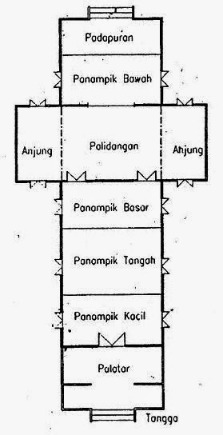

Rumah Adat Baloy adalah rumah panggung yang dibangun di atas tiang kayu setinggi sekitar 2-3 meter. Struktur ini membantu melindungi bangunan dari banjir dan kelembapan tanah. Material utamanya adalah kayu lokal, terutama kayu ulin yang dikenal kuat, keras, dan tahan lama. Bagian atap menggunakan daun rumbia atau seng. Bangunannya berbentuk persegi panjang dengan atap yang melengkung ke kedua sisi. Kayu ulin juga dikenal sebagai kayu besi karena memiliki ketahanan tinggi terhadap air. Berbeda dari jenis kayu lain yang dapat lapuk jika terus terkena air, kayu ulin justru dapat menjadi semakin kuat.
Rumah Baloy terdiri dari empat ruang utama yang memiliki fungsi berbeda dalam kegiatan adat dan kehidupan masyarakat Tidung, yaitu: Lamin Dalom: Ruang yang ditempati oleh Kepala Adat Tidung dan dilengkapi dengan singgasana sebagai bagian utama ruangan. Ambir Kiri (Alad Kait): Ruang yang digunakan masyarakat untuk menyampaikan atau mengadukan perkara adat. Ambir Tengah (Lamin Bantong): Ruang untuk melakukan musyawarah dan mengambil keputusan terkait perkara adat. Ruangan ini dilengkapi kursi untuk berdiskusi. Ambir Kanan (Ulad Kemagot): Ruang yang digunakan untuk proses perdamaian setelah perkara adat diselesaikan melalui musyawarah. Konstruksi Rumah Adat Baloy mencerminkan nilai masyarakat Tidung yang mengutamakan musyawarah, mufakat, dan kehidupan yang damai. Dalam sistem adatnya, keputusan diambil melalui kesepakatan bersama tanpa pemaksaan atau penyalahgunaan wewenang oleh kepala adat

Rumah Baloy memiliki ciri khas berupa kolam atau telaga yang biasanya berada di bagian belakang bangunan. Di tengah kolam tersebut terdapat bangunan yang disebut Lubung Kilong dan Lubung Intamu. Lubung Kilong: Aula terbuka luas yang digunakan sebagai tempat pertemuan masyarakat dalam berbagai kegiatan adat, seperti pelantikan pemangku adat, pertunjukan kesenian, dan musyawarah adat dalam skala besar digunakan sebagai tempat pertunjukan kesenian masyarakat Tidung, seperti tari Jepen. Lubung Intamu: Tempat pertemuan dan musyawarah serta digunakan untuk berbagai kegiatan adat, termasuk pelantikan pemangku adat.